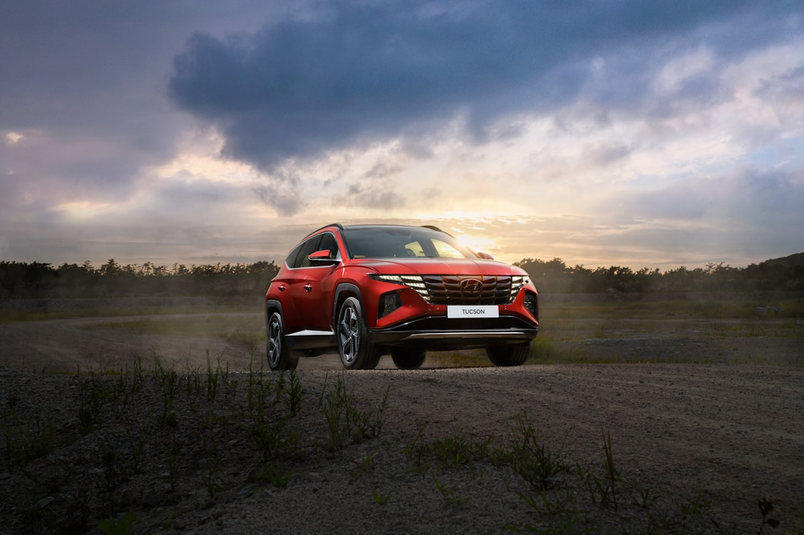

Ключі Hyundai в Ужгороді — дублікат, виготовлення, програмування

Виготовляємо ключі Hyundai для всіх моделей. Hyundai використовує леза HYN14 (старі), HYN17 (нові з 2010 року) та чіпи Texas 4D60, 4D70, ID46 (PCF7952), HITAG-2 і HITAG-AES для smart-ключів сучасних Tucson NX4, Santa Fe TM, Sonata DN8.
Потрібен ключ Hyundai?
Зателефонуйте — скажемо точну ціну та чи є потрібна заготовка
З якими моделями Hyundai ми працюємо
- Hyundai Accent (RB, HC)
- Hyundai Elantra (HD, MD, AD, CN7)
- Hyundai Sonata (NF, YF, LF, DN8)
- Hyundai i10 / i20 / i30 / i40
- Hyundai Tucson (JM, IX35, TL, NX4)
- Hyundai Santa Fe (CM, DM, TM)
- Hyundai Kona
- Hyundai Creta
- Hyundai Getz
- Hyundai ix55 / Veracruz
- Hyundai Palisade
- Hyundai Staria
Ціни на ключі Hyundai в Ужгороді
| Послуга | Ціна | Час |
|---|---|---|
| Дублікат механічного ключа HYN14 / HYN17 | від 1500 грн | 30 хв |
| Викидний ключ з чіпом 4D60 / ID46 | від 2000 грн | 45 хв |
| Smart-ключ Hyundai (Sonata LF, Tucson TL) | від 3500 грн | 1–2 год |
| Smart-ключ Hyundai HITAG-AES (Tucson NX4, Sonata DN8) | від 4500 грн | 2 год |
| Програмування при повній втраті | від 3500 грн | 1–3 год |
| Заміна корпусу ключа | від 600 грн | 20 хв |
| Ремонт викидного механізму | від 400 грн | 30 хв |
* Точна вартість залежить від моделі, року випуску та комплектації. Уточнюйте по телефону.
Чому Seven Keys для Hyundai?
- Усі покоління Hyundai від 2002 року до 2025
- Чіпи 4D60, 4D70, ID46, HITAG-2, HITAG-AES — у наявності
- Леза HYN14, HYN17 — основні профілі
- Прив'язка через OBD — без розборки авто
- Корпуси Tucson, Santa Fe, Sonata — на складі
- Працюємо з американськими Hyundai (315 МГц)
Як замовити ключ Hyundai
- Зателефонуйте і назвіть модель, рік випуску та VIN (бажано)
- Ми перевіримо наявність заготовки і назвемо точну ціну
- Приїжджайте до майстерні (вул. Фединця 39, Ужгород) або викликайте майстра з обладнанням
- Виготовляємо і програмуємо ключ при вас — у середньому за 1–2 години
- Перевіряємо роботу: запуск, центральний замок, кнопки
Часті запитання про ключі Hyundai
Скільки коштує ключ для Hyundai Tucson?
Залежить від року: для Tucson IX35 — від 2000 грн (чіп ID46), для Tucson NX4 — від 4500 грн (smart-key HITAG-AES).
Чи робите ключ для Hyundai Sonata DN8?
Так. Smart-ключ DN8 з HITAG-AES — від 4500 грн з програмуванням. При повній втраті — від 6000 грн.
Чи можете виготовити ключ для Hyundai Accent без оригіналу?
Так. Для Accent RB / HC програмуємо новий ключ через OBD або через зчитування іммобілайзера. Від 3000 грн.
Чи буде працювати старий ключ після додавання нового?
Так. Усі попередні ключі залишаться робочими.
Скільки часу займає виготовлення smart-ключа?
Дублікат — 1–2 години. При повній втраті — 2–3 години.
Не знайшли свою модель?
Працюємо з усіма Hyundai — зателефонуйте, підкажемо рішення